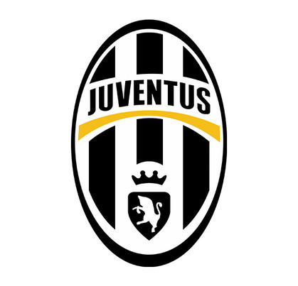
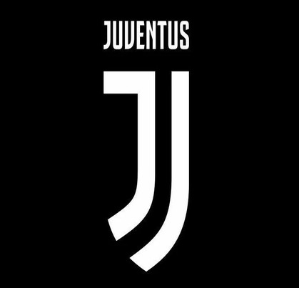
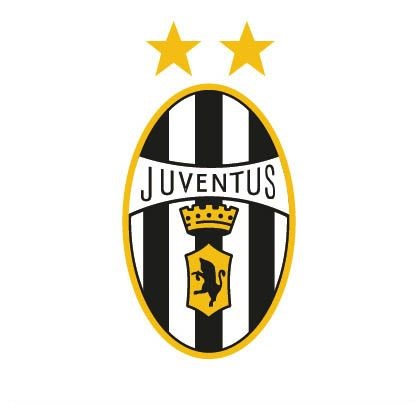
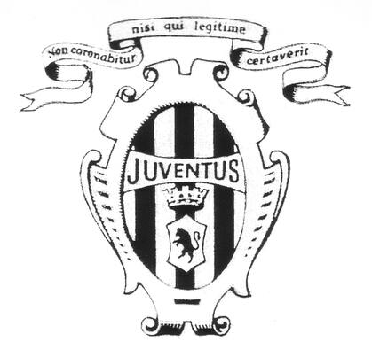

Lo stemma che la Juventus ha utilizzato dal 2004 al 2017 è stato oggetto di molte discussioni e controversie tra i tifosi del club. Questo stemma è stato introdotto in occasione del centenario della Juventus e sostituiva il precedente, che era stato utilizzato per oltre 30 anni. Il nuovo stemma era molto diverso dal precedente, in quanto presentava uno scudo bianco e nero con un toro rampante, simbolo di forza e determinazione. L'idea era quella di creare un'immagine più moderna e accattivante per il club, che potesse essere utilizzata in modo più efficace sui prodotti commerciali e sulle divise di gioco. Tuttavia, la scelta di cambiare lo stemma ha suscitato molte critiche da parte dei tifosi più tradizionalisti, che vedevano nella nuova immagine una perdita di identità del club. Inoltre, la decisione di introdurre lo stemma è stata presa senza consultare i tifosi, il che ha ulteriormente alimentato le polemiche. Nonostante le critiche, il nuovo stemma è stato utilizzato dalla Juventus per oltre 10 anni, diventando un'icona riconoscibile del club.
Iconico.
L'attuale stemma della Juventus è stato presentato il 16 gennaio 2017, in occasione del 120º anniversario della fondazione del club. Questo nuovo logo rappresenta un ulteriore passo avanti nella modernizzazione dell'immagine del club e nella sua volontà di espandere il proprio marchio a livello globale. Il nuovo stemma si presenta come un monogramma che riunisce le lettere "J" e "F", in riferimento alla Juventus Football Club. Questo design è stato scelto per rappresentare la storia e la tradizione del club, ma anche la sua evoluzione nel tempo. Il logo è stato ideato dallo studio di design milanese Interbrand, che ha lavorato in stretta collaborazione con la Juventus per sviluppare un'immagine che rispecchiasse i valori del club e le sue ambizioni future. Il nuovo stemma ha suscitato alcune polemiche tra i tifosi più tradizionalisti, che lo hanno criticato per la sua mancanza di riferimenti alle origini del club e alla sua storia. Tuttavia, la Juventus ha difeso la scelta del nuovo logo, sottolineando la sua modernità e la sua capacità di rappresentare il club in tutto il mondo. Nonostante le critiche iniziali, il nuovo stemma si è rapidamente affermato come un'icona riconoscibile della Juventus e ha contribuito a consolidare la sua posizione di club di primo piano a livello internazionale.
Minimale.
Lo stemma che la Juventus ha utilizzato dal 1990 al 2004 è stato uno dei più famosi e iconici nella storia del club. Questo logo, chiamato "lo scudetto", era caratterizzato da uno scudo bianco e nero con la scritta "Juventus" in alto e la figura di un toro rampante al centro. L'origine di questo stemma risale al 1971, quando la Juventus decise di sostituire il precedente logo con una nuova immagine che fosse più moderna e rappresentativa del club. Lo scudetto venne scelto perché rappresentava la vittoria, il successo e l'onore, valori che la Juventus voleva associare alla propria immagine. Questa nuova immagine venne utilizzata per oltre 14 anni, diventando un'icona riconoscibile del club e simbolo di numerosi successi sportivi. Nonostante la sostituzione, lo scudetto rimane tutt'oggi un'icona della Juventus e un simbolo di numerosi successi sportivi e di una gloriosa storia del club.
Dorato.
La versione più divertente e giocosa del logo della Juventus fu creata nel 1929 ma rimase con la squadra solo per due anni. La tavolozza dei colori del distintivo tornò di nuovo monocromatica, e invece del piccolo stemma con il toro d’oro e una corona, c’era una grande zebra disegnata in piedi su due gambe.
Divertente.

Il primissimo logo della Juventus per introdotto nel 1905 e comprendeva un elegante ovale con un motivo verticale in bianco e nero, racchiuso in un’ampia cornice a vignetta e con un nastro ricurvo sopra di esso. Due elementi sulla cresta erano il marchio verbale nero su uno stendardo bianco allungato orizzontalmente e un piccolo scudo con un toro nero araldico su di esso. C’era anche una corona bianca rigida e solida, posta tra la cresta del toro e la targa. La scritta sul nastro era in latino “Non coronabitur nisi qui legitime certaverit” che può essere tradotto in inglese come “Non riceve la corona, chi non gioca secondo le regole”.
Aristocratico.
